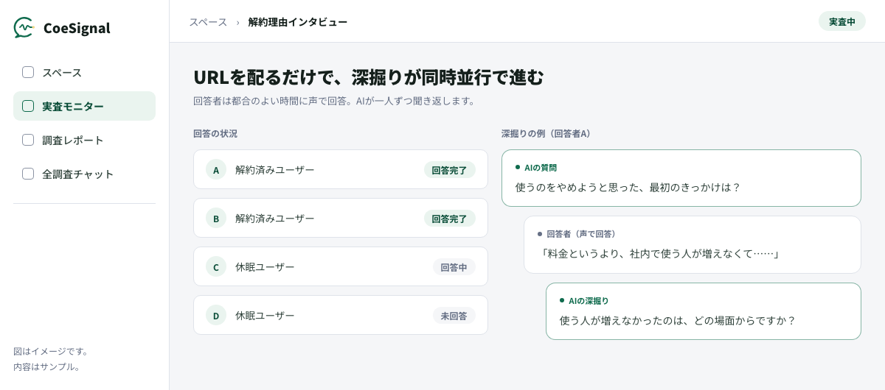

- 解約アンケートの選択肢集計で分かるのは、解約の「きっかけ」の分布まで。期待とのずれ・比較検討・我慢の蓄積という本当の離反の理由は、一人ずつ聞かないと言葉にならない。
- AIインタビューなら、解約者・休眠顧客にURLを配るだけで声の深掘りインタビューを継続的に回せる。「使うのをやめようと思った、最初のきっかけは？」から時系列で下りていく。
- 成果は集計表ではなく、根拠に遡れる判断メモ。結論・反証・次の検証までを残し、オンボーディング・料金・機能の打ち手仮説につなげる。
解約アンケートではなぜ本当の理由が分からないのか？
選択肢で拾えるのは解約の「きっかけ」まで。期待とのずれや我慢の蓄積という本当の理由は、集計に現れない。
解約時アンケートは取っていて、「料金に見合わなかった」「使わなくなった」「他サービスへ移行」——選択肢の集計もできている。それでも、経営会議で「結局、なぜ解約されているのか」と問われると、集計表を前に答えに詰まる。この記事では、その「集計の先」にある離反の理由を、AIインタビューで声から深掘りし、プロダクト・CS改善につなげる方法を解説します。
集計を眺めても打ち手が決まらない理由はシンプルで、選択肢が拾えるのは解約の最後の「きっかけ」だけだからです。解約は一晩では決まりません。導入時に期待していたことと現実のずれ、小さな不満の蓄積、代替サービスとの比較検討——その長い経緯の末端にある一押しだけが、選択肢に表れます。
自由記述欄でも「なぜ」までは追えない
では自由記述欄があれば分かるかというと、そうでもありません。書く負荷が高いので多くの人は「特にありません」で済ませ、書いてくれた人の回答も一往復で終わるため、「なぜそう感じたのか」を追えません。
VoC（Voice of Customer：顧客の声）分析と呼ばれる取り組みの多くが、この「書かれた声」の集計で止まっています。解約理由の調査で本当に知りたいことと、アンケートで分かることのずれを整理すると次のようになります。
| 知りたいこと | 解約アンケートで分かること | 聞かないと分からないこと |
|---|---|---|
| 解約の理由 | 最後のきっかけ（料金・利用頻度など）の分布 | きっかけに至るまでの期待とのずれ・我慢の蓄積 |
| 競合への乗り換え | 「他サービスへ移行」という事実 | 何と比べ、何が最後の決め手になったか |
| 引き止め・復帰の可能性 | ほぼ分からない | 「何が変わればまた使うか」という戻る条件 |
選択肢の集計は「どの理由が多いか」の分布を教えてくれるが、「なぜそうなったか」は教えてくれない。分布は打ち手の優先順位づけに、理由の深掘りは打ち手の中身の設計に使う。両方必要で、欠けているのはたいてい後者だ。
解約理由をインタビューで聞くと何が分かるのか？
離反に至る時系列が言葉で残る。最初のつまずき、乗り換え先の決め手、そして「戻る条件」まで下りて聞ける。
インタビューの価値は往復にあります。「サポートに不満があった」という声に対して「それはいつ頃からですか」「その時どうしましたか」と続けて聞くと、離反は点ではなく線として見えてきます。解約者・休眠顧客への聞き取りで立ち上がってくるのは、主に次の4つです。
| 観点 | 問いの方向性 | 分かること |
|---|---|---|
| 離反の時系列 | 「気持ちが離れ始めたのはいつ頃でしたか」 | 解約日と離反の始まりはずれている。手を打てた時点が特定できる |
| 最初のつまずき | 「最初に想定と違ったのはどこでしたか」 | オンボーディングでの未達・期待とのギャップの起点 |
| 乗り換え先の決め手 | 「他に何を比べ、何が決め手でしたか」 | 比較の土俵と、最後に背中を押した要素 |
| 戻る条件 | 「何が変わればまた検討しますか」 | 引き止め・復帰導線を設計する材料 |
同じ一人の解約者から得られる情報が、聞き方でどれだけ変わるか。架空の例で対比するとこうなります。
図：同じ解約者から得られる情報の差（※内容はいずれも架空の例です）。
これらはいずれも定性的な情報です。数字に集計する前に、まず言葉として確かに掴む——ここを飛ばして数値化を急ぐと、また「きっかけの分布」に戻ってしまいます。一往復で終わらせず経緯まで下りる聞き方の技法は、デプスインタビューのやり方で詳しく扱っています。
解約データは「何人が去ったか」を教えてくれる。インタビューは「なぜ去ったか」と「どうすれば戻るか」を教えてくれる。
AIインタビューで解約・VoC調査をどう回すか？
解約者・休眠顧客にURLを配り、声で答えてもらう。AIが一人ずつ深掘りし、離反パターンと反証を横断で整理する。
解約インタビューの価値は昔から知られていますが、実施のハードルが高すぎました。解約した相手との日程調整、聞き手（モデレーター）の確保、文字起こしと整理——結果、年に一度の単発プロジェクトになりがちです。解約は毎月起きているのに、調査は年1回。この構造を変えるのがAIインタビューです。
たとえばAIインタビュープラットフォームのCoeSignalでは、回答者はURLを開いて声で答えます（テキストでの回答も可能です）。リアルタイムの通話ではないため、解約した相手と日程を合わせる必要がなく、回答者は自分の都合のよい時間に話せます。そしてAIが一人ずつ、「使うのをやめようと思った、最初のきっかけは？」といった問いから深掘りしていきます。
図：AIインタビューが解約者の声を深掘りする流れの例（会話内容はサンプル）。回答者はURLを開いて声で答え、リアルタイム通話ではないため自分の都合のよい時間に話せます。
実査が始まると、管理側から見える景色はこうです。URLを配った後は回答者それぞれの都合で回答が進み、AIが一人ずつ深掘りしていきます——解約した相手に配って成立するのは、この始めやすさがあるからです。

図：実査中のイメージ（内容はサンプル）。回答者はURLを開いて声で答えるだけで、リアルタイム通話ではないため都合のよい時間に話せます。
従来の解約インタビューと何が変わるか
従来のやり方と比べると、変わるのは「深さ」ではなく「回し続けられるかどうか」です。
| 観点 | 従来の解約インタビュー | AIインタビュー |
|---|---|---|
| 日程調整 | 解約者と個別に調整が必要 | 不要。URLを開いた時に回答者の都合で答えられる |
| 聞き手 | モデレーターの確保・育成が必要 | AIが一人ずつ同じ品質で深掘りする |
| 実施の頻度 | 単発プロジェクトになりがち | 解約発生のたびに配布でき、継続運用しやすい |
| 回答の形式 | 対面・通話での聞き取り | 声で回答（テキストも可）。リアルタイム通話ではない |
| 横断の分析 | 文字起こしから手作業で整理 | 複数の声を横断し、離反パターンと反証を整理 |
誰に配り、どう続けるか
対象は、自社の解約者・休眠顧客・既存の会員へのURL配布が基本です（社員向けの退職・従業員VoC調査にも同じ仕組みが使えます）。
声を聞きたい相手が自社のリストの外にいる場合——たとえば競合サービスの利用者に乗り換えの決め手を聞きたい場合——は、CoeSignalのManaged Researchが提携ネットワーク100万人以上のパネルからの募集に対応しています。エンタープライズでの運用には、SSO・権限管理・監査ログ・NDAを備えたEnterprise Controlがあります。
大事なのは一度きりの調査で終わらせず、解約のたびに自動で聞き、四半期ごとに横断で読むというリズムを仕組みにしてしまうことです。
聞いた声をプロダクト・CS改善につなげるには？
声を根拠に遡れる判断メモに落とし、打ち手仮説と次の検証へつなぐ。少数意見と反証を捨てないことが要点。
いちばん多い失敗は、集めた声が議事録フォルダで眠ることです。防ぐには、成果物の形から先に決めます。
CoeSignalが成果物を「判断メモ」——結論だけでなく、反証・次の検証・引用元・許諾済みの原音声まで遡れる形——と定義しているのはこのためで、「解約理由の上位は○○でした」という要約ではなく、意思決定に使える形で声を残します。流れは3段階です。
- 声を判断メモに落とす。結論・根拠となる引用・反証・次の検証をワンセットで書く。誰のどの発言に基づく結論かに、いつでも遡れるようにしておく。
- 打ち手仮説に変換する。最初のつまずきはオンボーディング改善へ、値ごろ感のずれは料金プランと価値の伝え方へ、乗り換えの決め手は機能・体験の優先順位へ。どの離反パターンに効かせる打ち手かを明示する。
- 次の検証を回す。打ち手を実施した後の解約者にまた聞く。同じつまずきが語られなくなったかを、数字と声の両方で確かめる。
少数意見と反証を捨てない
このとき、少数意見を数で切り捨てないことが重要です。1人しか語らなかった声でも、構造的な問題の最初の兆候であることがあります。
また、自分たちに都合のよい声だけを拾う確証バイアスを防ぐために、結論に合わない声＝反証をあえて残す——判断メモに反証の欄がある意義はここにあります。複数の声を横断して読み解く具体的な手順は、インタビュー分析の進め方で掘り下げています。
判断基準はシンプル。「その打ち手は、誰のどの発言に遡れるか」。遡れない打ち手仮説は、声を聞いたつもりの思い込みかもしれない。引用元まで遡れる形で声を残すことが、VoC分析を意思決定の道具にする。
解約・VoC調査は、始めるハードルが下がった今こそ設計の差が出ます。どの層に配るか、最初の問いを何にするか、判断メモを誰がどの会議で使うか。CoeSignalは登録不要・無料の5分体験で回答者側の体験をすぐ試せるので、まず自分で答えてみてから設計を考えるのが早道です。
上場企業を含む37社・2,500名のAI支援を通じて見えてきたのは、ツールより先に「聞いた声を誰がどう使うか」を決めたチームほど、解約調査が改善サイクルとして回り続けるという傾向です。
まず何から始めるか
- 回答者側の体験を自分で試す。登録不要・無料の5分体験で、URLを開いて声で答える体験を一度通しておく。設計の勘所が具体的になります。
- 最初の問いを1つ決める。「使うのをやめようと思った、最初のきっかけは？」のように、時系列の起点から下りられる問いを直近の解約者向けに用意する。
- 声の使い道を先に決める。判断メモを誰が書き、どの会議で読むか。ここを決めてから配り始めると、声が議事録フォルダで眠りません。
よくある質問
全員は答えてくれません。だからこそ答えやすさの設計が重要です。日程調整が要らずURLを開くだけで始められること、文章を書くより声で話すほうが負荷が低いこと、所要時間の目安を先に示すことが回答率を左右します。一般的には、協力へのお礼（謝礼）を用意する設計も広く行われています。それでも答えてくれた人の声は「わざわざ語ってくれた理由」であり、少数でも重い情報として扱う価値があります。
自由回答は一往復で終わり、書かれたことしか分かりません。「サポートが不満」と書かれても、いつ・何があって・何と比べてそう感じたのかは残りません。インタビューは「それはいつ頃からですか」「その時どうしましたか」と続けて聞けるため、離反に至る経緯と理由の構造まで下りられます。自由回答の分析は傾向の把握に、インタビューは理由の深掘りに、と役割を分けるのが実務的です。
目的によりますが、定性調査では新しい話が出なくなる「飽和」が一つの目安とされます。同じ離反パターンが繰り返し語られるようになったら、そのテーマは一区切りです。少人数から始めて、聞くたびに問いを更新しながら追加していく回し方が現実的で、解約が発生するたびに聞ける仕組みにしておくと、飽和の判断もしやすくなります。
個人への不満が語られることはありますが、それ自体も「どの接点で期待とずれたか」を示す情報です。大事なのは、個人の責任追及ではなく仕組みの改善につなげる前提を社内で共有しておくことと、担当者名など個人が特定される情報は匿名化・要約で扱うルールを決めておくことです。利害のない聞き手であるAIが相手だからこそ、担当者を目の前にしては言いにくい本音が出やすくなる面もあります。